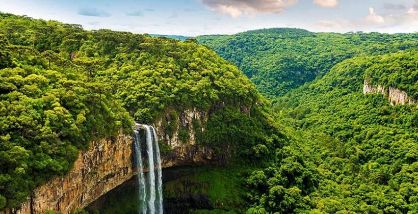
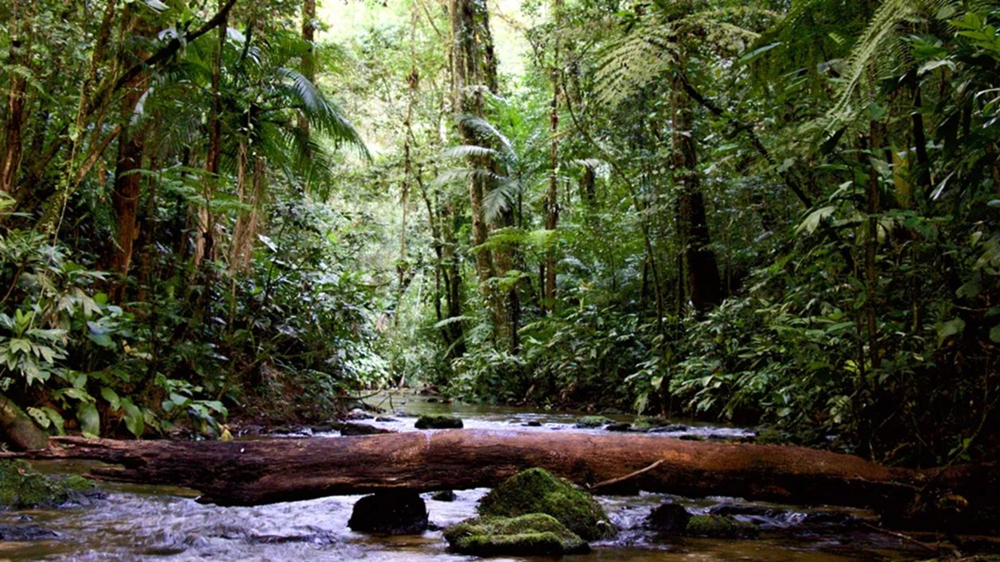

Parque Estadual Acaraí

Criado em 23 de setembro de 2005, pelo Decreto Estadual Nº 3.517, localizado no município de São Francisco do Sul, o Parque Estadual Acaraí é uma ação propositiva para o estabelecimento de uma política territorial direcionada, em especial, para o turismo e para o desenvolvimento Considerando que a Mata Atlântica é um dos biomas mais ameaçados do planeta e, por isso, as ações para sua preservação, recuperação e restauração são prioridades nas políticas de conservação de biodiversidade, a criação do Parque Estadual Acaraí representa uma conquista para todos os catarinenses. Esta unidade de conservação com uma área aproximada de 6.667 hectares, localizada na planície litorânea da ilha de São Francisco, somado o arquipélago Tamboretes, pertencentes ao município de São Francisco do Sul, é mais uma iniciativa governamental e da sociedade civil no sentido de garantir a preservação de áreas de valor cênico, de relevância em biodiversidade e do mais importante remanescente contínuo de ecossistemas costeiros em Santa Catarina formado pela restinga da Praia Grande, e de ampliar o conhecimento de nossa história pré-colonial e colonial. O complexo hídrico existente nesta área, formado pelo rio Acaraí, que dá o nome ao Parque, nascentes do rio Perequê e lagoa do Capivaru, é responsável pelo abrigo, reprodução e alimentação de várias espécies aquáticas, que somado à Vegetação de Restinga e de Floresta das Terras Baixas do Domínio da Mata Atlântica, constituem local para proteção da flora e fauna, entre elas as endêmicas e ameaçadas de extinção. A criação de um parque estadual é uma ação propositiva para o estabelecimento de uma política territorial direcionada, em especial, para o turismo e para o desenvolvimento regional e a conciliação do processo de desenvolvimento municipal com a preservação ambiental em bases sustentáveis. Até agora foram identificadas no Parque Estadual Acaraí: 337 espécies vegetais, 176 espécies de aves, 35 espécies de répteis (5 tartarugas marinhas, 1 cágado de água doce, 1 crocodiliano, 6 lagartos, 1 anfisbenídeo e 19 serpentes), 17 espécies de anfíbios, 20 espécies de mamíferos não-voadores e38 espécies de peixes no Rio Acaraí. A necessidade de promover educação ambiental, propiciando, por meio do contato das pessoas com a natureza, a sensibilização para a conservação dos recursos naturais e para o desenvolvimento de valores e atitudes compromitentes com a boa qualidade de vida, ratifica em muito a iniciativa de se criar unidades de conservação.
Parque Estadual Rio Canoas

A área correspondente ao Parque Estadual Rio Canoas foi adquirida pela empresa Campos Novos Energia S/A (Enercan) e doada ao Estado de Santa Catarina para fins de compensação ambiental, decorrente da implantação da Usina Hidrelétrica em Campos Novos. Possibilitando a criação de uma Unidade de Conservação de Proteção Integral, por meio do decreto Nº 1.871, de 27 de maio de 2004, e que hoje é conhecido como Parque Estadual Rio Canoas. O Parque está situado no Distrito do Ibicuí, município de Campos Novos. Na data de sua criação, a área total do Parque era de 1.067,8592 hectares, com uma área de 65,3960 hectares correspondente à área de preservação permanente (APP) com faixa de 100 metros a partir da cota altimétrica de inundação (660 m), do reservatório da Usina Hidrelétrica de Campos Novos (UHE Campos Novos) em sua margem direita, perfazendo área total 1.133,2552 hectares. Em 02 de outubro de 2020, foi adquirida uma nova área, anexa à já existente, de 95 hectares, a qual foi doada ao Parque por meio de compensação ambiental da empresa EDP Energias do Brasil. Atualmente a Unidade de Conservação conta com uma área total de 1.228,7 hectares.Boa parte das riquezas naturais de Santa Catarina está abrigada nessa área. Pertencente ao bioma Mata Atlântica, esta Unidade de Conservação tem a finalidade de proteger a biodiversidade e encontra-se em um ecótono, que é uma faixa de transição entre o ecossistema da Floresta Estacional Decidual (FED) e a Floresta Ombrófila Mista (FOM) formada por araucária (Araucaria angustifolia), xaxim (Dicksonia sellowiana), imbuia (Ocotea porosa), cedro (Cedrela fissilis) e demais espécies arbóreas. Na Cachoeira do Lageado do Roberto, onde há formação de paredões rochosos e cânions, predomina a presença de cactos, como a tuna (Parodia linkii). Os ecossistemas presentes do parque servem de abrigo para diversas espécies da fauna, desde cervídeos (Mazama sp.) a felinos, dentre eles o gato-maracajá (Leopardus wiedii), gato-mourisco (Puma yagouaroundi) e a onça-parda (Puma concolor).
Parque Estadual Rio Vermelho

O Parque Estadual do Rio Vermelho (PAERVE) é uma unidade de conservação de proteção integral, criado pelo Decreto Estadual nº 308/2007. Situa-se no município de Florianópolis, no nordeste da Ilha de Santa Catarina, entre a Praia de Moçambique (12,5 km de extensão), à leste, e a Lagoa da Conceição, à oeste, com área de 1.532 ha. Conforme o Decreto Estadual nº 308/2007, o Parque Estadual do Rio Vermelho visa conservar amostras de Floresta Ombrófila Densa (Floresta Atlântica), das Formações Pioneiras (Vegetação de Restinga) e da fauna associada do domínio da Mata Atlântica, manter o equilíbrio do complexo hídrico da região, além de propiciar ações ordenadas de recuperação de seus ecossistemas alterados e proporcionar a realização de pesquisas científicas e a visitação pública com o desenvolvimento de atividades de educação e interpretação ambientais, de recreação em contato com a natureza e de turismo ecológico.
Parque Estadual das Araucárias

Criado pelo Decreto nº 293, de 30 de maio de 2003, o Parque Estadual das Araucárias localiza-se nos municípios de São Domingos e Galvão, na Bacia do Rio Chapecó. A Unidade de Conservação, composta por uma área de 612 hectares, foi criada visando a proteção e conservação de uma amostra da Floresta Ombrófila Mista. É importante ressaltar a ocorrência de duas espécies ameaçadas de extinção na UC, a araucária angustifólia (araucária) e dicksonia sellowiana (xaxim). Dentro do Parque encontra-se o Rio Jacutinga, afluente do Rio Bonito. Além de ser um importante afluente do rio Chapecó, é responsável pelo abastecimento de água do município de São Domingos.O Parque Estadual das Araucárias foi aberto à visitação pública no dia 07 de Abril de 2016 e conta com infraestrutura para o recebimento de visitantes (centro de visitantes, sala de ambientação), eventos (auditório e espaço aberto) e pesquisadores (casa de alojamento). Atualmente a UC conta com três trilhas ecológicas: Trilha do Mirante das Araucárias, Trilha da Cascata e Trilha da Corredeira do Rio Araçá.